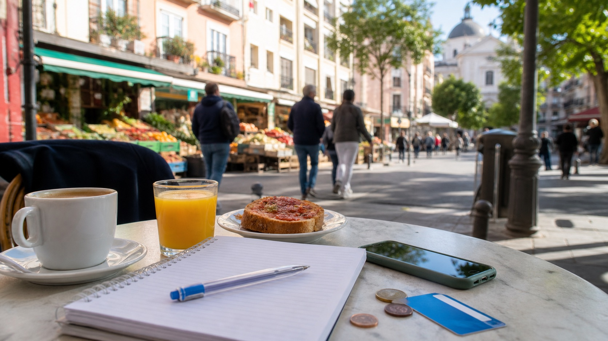

Casa prima della movida
Pagare 150 € in piu' per stare in una zona centrale puo' avere senso se risparmi tempo e trasporti notturni. Se invece studi fuori centro, un quartiere vicino al campus puo' liberare budget.
Budget Erasmus Madrid
Madrid non e' economica come molte citta' universitarie spagnole, ma resta gestibile se scegli bene casa, usi l'abbonamento studenti e tieni sotto controllo le uscite.

Stima mensile
Per molti studenti italiani in stanza condivisa, una fascia prudente e' tra 900 e 1.300 € al mese. Si puo' spendere meno fuori centro, ma serve flessibilita' sugli spostamenti.
| Voce | Fascia mensile | Note pratiche |
|---|---|---|
| Stanza in appartamento condiviso | 500-800 € | La voce piu' pesante. Centro, Moncloa, Chamberi e Malasaña tendono a salire. |
| Bollette e internet | 50-100 € | Verifica se sono incluse. In inverno il riscaldamento puo' incidere. |
| Spesa alimentare | 220-330 € | Mercati di quartiere e supermercati fuori dalle zone turistiche aiutano a risparmiare. |
| Trasporti | 10 € | Prezzo 2026 dell'Abono Joven 30 giorni per under 26. Controlla sempre CRTM per aggiornamenti. |
| Telefono e servizi digitali | 10-25 € | Molti studenti usano roaming UE o una SIM locale se restano piu' mesi. |
| Vita sociale, sport e cultura | 150-300 € | Dipende molto da tapas, viaggi, serate, palestra e musei. |
Il primo mese costa piu' degli altri perche' si sommano arrivo, deposito e acquisti iniziali. Pianifica un margine prima di ricevere eventuali rate della borsa Erasmus.
Risparmio intelligente
L'obiettivo non e' rinunciare alla vita Erasmus, ma scegliere bene dove vale la pena spendere.
Pagare 150 € in piu' per stare in una zona centrale puo' avere senso se risparmi tempo e trasporti notturni. Se invece studi fuori centro, un quartiere vicino al campus puo' liberare budget.
A pranzo molti locali offrono menu completi piu' convenienti della cena. Per la spesa, alterna supermercati e mercati di quartiere.
Welcome week, ESN, associazioni e musei con fasce gratuite permettono di conoscere persone senza trasformare ogni uscita in una spesa alta.
Toledo, Segovia, Valencia o Andalusia sono mete comuni. Prenotare presto e viaggiare in gruppo riduce molto il costo.
Controlla commissioni della tua banca italiana su prelievi e pagamenti. Una carta con buone condizioni estere evita microcosti continui.
Non usare tutto per affitto e viaggi: tieni un margine per deposito bloccato, visite mediche, documenti o cambio stanza.
850-1.000 €/mese
Stanza fuori centro, molte cene in casa, uscite selezionate, pochi viaggi.
1.000-1.200 €/mese
Stanza in zona ben collegata, vita sociale regolare, qualche viaggio breve.
1.250 €+ /mese
Zona centrale o residenza, piu' ristoranti, sport, viaggi e margine extra.